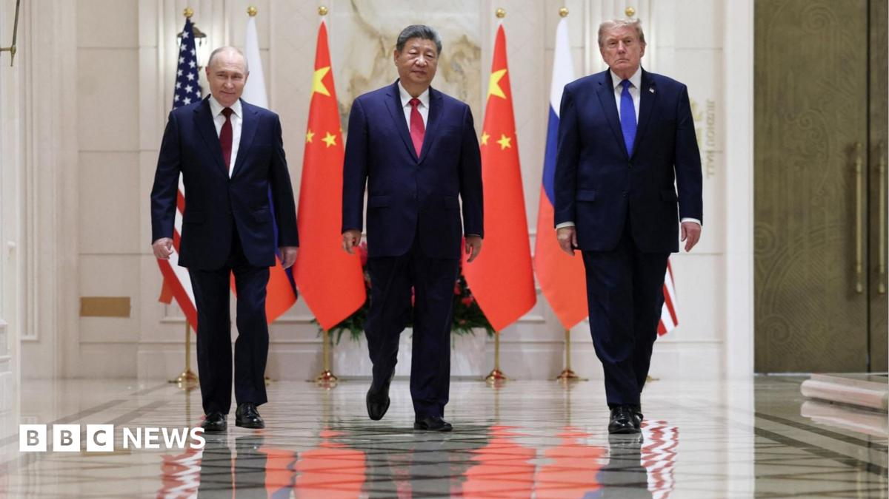

World · 20 Nov 2026
Trump, Putin and Xi release 'peace declaration' after historic meeting

While the presidents have previously met for one-on-one meetings, this is their first trilateral discussion.
Multiple independent publishers are reporting on the same development: Trump, Putin and Xi release 'peace declaration' after historic meeting.
The available reports place the development in the World category. The accounts were compared for agreement on the central event rather than simply shared names or broad topics.
One of the available reports describes the development this way: While the presidents have previously met for one-on-one meetings, this is their first trilateral discussion.
Readers should consult the linked source reports for additional context, updates and details that may change as the story develops.
Sources
This article was produced by the C. O. Eric AI Newsroom from the cited sources. It is published only after automated evidence and safety checks.